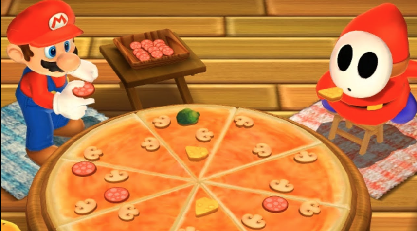
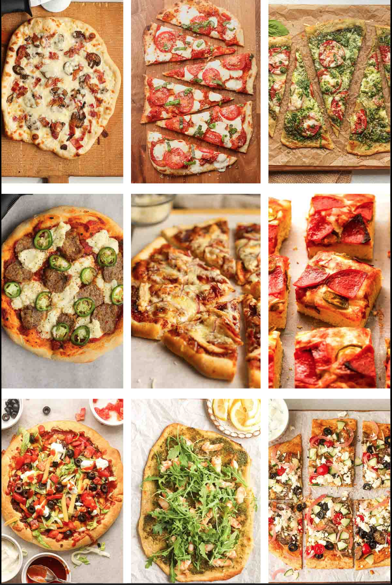
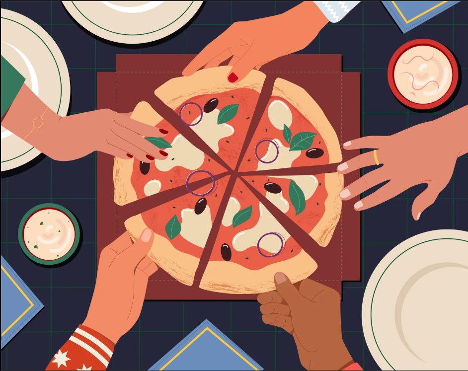

Welcome to the Pizza Museum
This website merely talks about pizza: its history, its ingredients as well as toppings, and a tutorial to make a few pizzas. I wanted an excuse to make a website about pizza so this is my project for Comp 484.
Introduction
History
Here you will learn about the history of pizza! It is a staple food here in America for parties, dinner, or even lunch. So the history of pizza here will cover how it came to be, its origins, and why it became so popular here.
Tutorial
 Ever have some extra time to spend? Why not make a pizza? Here you will find a simple tutorial to make a few popular pizza styles at home. These recipes use beginner-friendly steps and common ingredients.
Toppings/ingredients
 Ever wondered what other toppings are put in pizza apart from the popular ones such has pepperoni, mushrooms, and olives? Here will talk about those topics as well as various others that are not as well known. Perhaps it could inspire you to choose these toppings the next time you get or make a pizza?
Did you know?
- Small changes in oven temperature can make a big difference in crust texture.
- Too much sauce can weigh down the dough and make the middle soggy.
- Adding fresh herbs after baking keeps them brighter and more flavorful.
- Pepperoni is the most popular pizza topping in the world
Sources
- Britannica: Pizza
- Smithsonian Magazine: Title of article
- HelloFresh: History of pizza